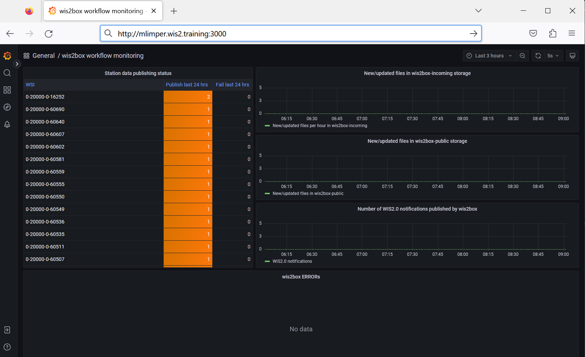
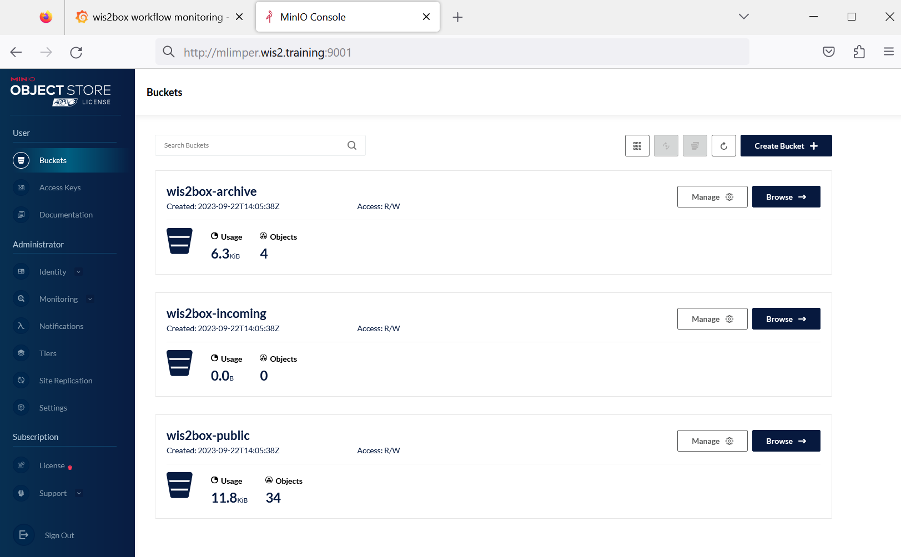
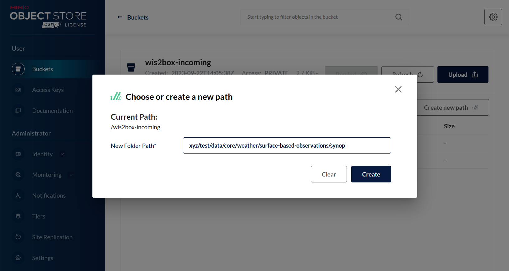
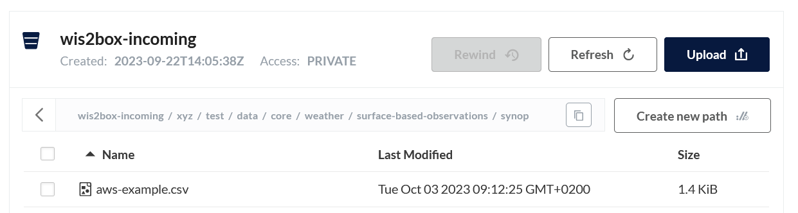
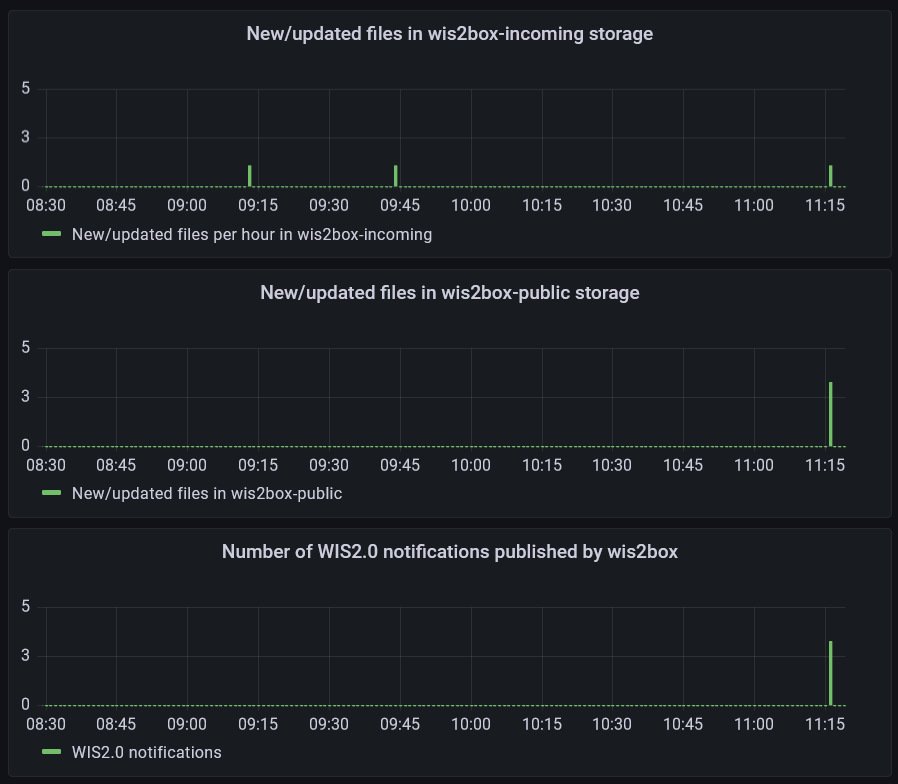
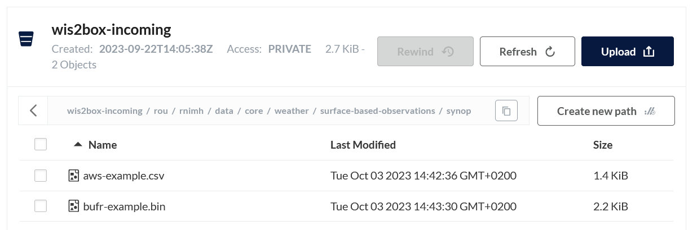

Data ingest and monitoring
Learning outcomes
By the end of this practical session, you will be able to:
- trigger different wis2box data pipelines using different file types
- monitor the status of your data ingest and publishing
Introduction
The wis2box-management container listens to events from the MinIO storage service to trigger data ingestion based on the configuration of data-mappings.yml. This allows you to upload data into MinIO and have wis2box automatically ingest and publish data in real-time.
For the purpose of next few exercises we will use the MinIO admin interface to upload data into MinIO.
The same steps can be done programmatically by using any MinIO or S3 client software, allowing you to automate your data ingestion as part of your operational workflows.
Preparation
Login to you student VM using your SSH client (PuTTY or other).
Make sure wis2box is up and running:
cd ~/wis2box-1.0b5/
python3 wis2box-ctl.py start
python3 wis2box-ctl.py status
Make sure your have MQTT Explorer running and connected to your instance. If you are still connected from the previous session, clear any previous messages you may have received from the queue. This can be done by either by disconnecting and reconnecting or by clicking the trash can for the topic.
Make sure you have a web browser open with the Grafana dashboard for your instance by going to http://<your-host>:3000

And make sure you have a second tab open with the MinIO user interface at http://<your-host>:9001. Remember you need to login with the WIS2BOX_STORAGE_USER and WIS2BOX_STORAGE_PASSWORD defined in your wis2box.env file:

Ingesting CSV data
First we will use a test sample in the CSV format using the AWS template. The data-mappings.yml on your wis2box are configured to use the wis2box.data.csv2bufr.ObservationDataCSV2BUFR plugin for files with the extension .csv:
csv:
- plugin: wis2box.data.csv2bufr.ObservationDataCSV2BUFR
template: aws-template
notify: true
buckets:
- ${WIS2BOX_STORAGE_INCOMING}
file-pattern: '^.*\.csv$'
Download the following sample data files to your local machine:
Now go back to MinIO in your web browser and navigate to the wis2box-incoming bucket and click 'Create new path' to create the following directory:
xyz/test/data/core/weather/surface-based-observations/synop

Upload the file aws-example.csv to the directory you just created:

Exercise 1: check for errors
Do you see any errors reported on the Grafana dashboard?
Click to reveal answer
The 'wis2box ERRORs' displayed at the bottom of the Grafana home dashboard should report the following error:
ERROR - handle() error: Topic Hierarchy validation error: No plugins for http://minio:9000/wis2box-incoming/xyz/test/data/core/weather/surface-based-observations/synop/aws-example.csv in data mappings. Did not match any of the following: ...
Note, the data definition in data-mappings.yml uses . instead of / to separate the path elements.
However the path using . in the data-mappings.yml and / in MinIO are equivalent.
If there are no data mappings defined for the directory that received the data, wis2box will not initiate any workflow.
Exercise 2: correct your input path and repeat the data ingest
Go back to MinIO to the root of the wis2box-incoming bucket. Then click 'Create new path' and define the correct path for wis2box. For example if your country code is idn and your centre-id is bmkg, you should create the following path:
idn/bmkg/data/core/weather/surface-based-observations/synop
Now upload the sample data file aws-example.csv to the new path. Do you see any errors reported on the Grafana dashboard?
Click to reveal answer
The Grafana dashboard should report the following errors:
- ... {/app/wis2box/data/csv2bufr.py:98} ERROR - Station 0-20000-0-60360 not in station list; skipping
- ... {/app/wis2box/data/csv2bufr.py:98} ERROR - Station 0-20000-0-60355 not in station list; skipping
- ... {/app/wis2box/data/csv2bufr.py:98} ERROR - Station 0-20000-0-60351 not in station list; skipping
As the stations in the test data are not defined in your wis2box metadata, the data ingest workflow will not be triggered.
If instead you again see the error Topic Hierarchy validation error: No plugins for ... in data mappings, check that you have defined the correct path in MinIO and repeat the data ingest.
Exercise 3: add the test stations and repeat the data ingest
Add the following stations to your wis2box using the station editor in wis2box-webapp:
- 0-20000-0-60351
- 0-20000-0-60355
- 0-20000-0-60360
Now re-upload the sample data file aws-example.csv to the same path in MinIO you used in the previous exercise.
Check the Grafana dashboard, are there any new errors ? How can you see that the test data was successfully ingested and published?
Click to reveal answer
If you were subscribed with MQTT Explorer to your wis2box-broker, you should have received notifications for the test data when the data was successfully published.
You can also check the charts on the Grafana home dashboard to see if the test data was successfully ingested and published.

The chart "Number of WIS2.0 notifications published by wis2box" indicates that notifications were successfully published on the MQTT broker in wis2box.
Ingesting binary data
wis2box can ingest binary data in BUFR format using the wis2box.data.bufr4.ObservationDataBUFR plugin included in wis2box.
You can verify that the plugin is configured in your wis2box by checking the contents of data-mappings.yml from the SSH command line:
cat ~/wis2box-data/data-mappings.yml
And you should see it contains an entry that specifies that files with the extension .bin should be processed by the wis2box.data.bufr4.ObservationDataBUFR plugin:
bin:
- plugin: wis2box.data.bufr4.ObservationDataBUFR
notify: true
buckets:
- ${WIS2BOX_STORAGE_INCOMING}
file-pattern: '^.*\.bin$'
This plugin will split the BUFR file into individual BUFR messages and publish each message to the MQTT broker. If the station for the corresponding BUFR message is not defined in the wis2box station metadata, the message will not be published.
Please download the following sample data file to your local machine:
Exercise 4: ingest binary data in BUFR format
Upload the sample data file 'bufr-example.bin' to the same path in MinIO you used in the previous exercise:

Check the Grafana dashboard and MQTT Explorer to see if the test-data was successfully ingested and published.
How many messages were published to the MQTT broker for this data sample?
Click to reveal answer
If you successfully ingested and published the last data sample, you should have received 10 new notifications on the wis2box MQTT broker. Each notification correspond to data for one station for one observation timestamp.
Ingesting SYNOP data in ASCII format
In the previous session we used the SYNOP form in the wis2box-webapp to ingest SYNOP data in ASCII format. You can also ingest SYNOP data in ASCII format by uploading the data into MinIO. The data-mappings.yml on your wis2box are configured to use the plugin wis2box.data.synop2bufr.ObservationDataSYNOP2BUFR for files with the extension .txt:
txt:
- plugin: wis2box.data.synop2bufr.ObservationDataSYNOP2BUFR
notify: true
buckets:
- ${WIS2BOX_STORAGE_INCOMING}
file-pattern: '^.*-(\d{4})(\d{2}).*\.txt$'
Download the following two sample data files to your local machine:
(click 'save as' in your browser to download the files)
Note that the 2 files contain the same content, but the filename is different. The filename is used to determine the date of the data sample.
The file pattern in data-mappings.yml specifies that the regular expression ^.*-(\d{4})(\d{2}).*\.txt$ that is used to extract the date from the filename. The first group in the regular expression is used to extract the year and the second group is used to extract the month.
Exercise 5: ingest SYNOP data in ASCII format
Go back to the MinIO interface in your browse and navigate to the wis2box-incoming bucket and into the path where you uploaded the test data in the previous exercise.
Upload the new files in the correct path in the wis2box-incoming bucket in MinIO to trigger the data ingest workflow.
Check the Grafana dashboard and MQTT Explorer to see if the test data was successfully ingested and published.
What is the difference in the properties.datetime between the two messages published to the MQTT broker?
Click to reveal answer
Check the properties of the last 2 notifications in MQTT Explorer and you will note that one notification has:
"properties": {
"data_id": "wis2/rou/test/data/core/weather/surface-based-observations/synop/WIGOS_0-20000-0-60355_20230703T090000",
"datetime": "2023-07-03T09:00:00Z",
...
and the other notification has:
"properties": {
"data_id": "wis2/rou/test/data/core/weather/surface-based-observations/synop/WIGOS_0-20000-0-60355_20230803T090000",
"datetime": "2023-08-03T09:00:00Z",
...
The filename was used to determine the year and month of the data sample.
MinIO Python client (optional)
In this exercise we will use the MinIO Python client to copy data into MinIO.
MinIO provides a Python client which can be installed as follows:
pip3 install minio
On your student VM the 'minio' package for Python will already be installed.
Go to the directory exercise-materials/data-ingest and run the example script using the following command:
cd ~/exercise-materials/data-ingest
python3 copy_data_to_incoming.py
Note
You will get an error as the script is not configured to access the MinIO endpoint on your wis2box yet.
The script needs to know the correct endpoint for accessing MinIO on your wis2box. If wis2box is running on your host, the MinIO endpoint is available at http://<your-host>:9000.
The sample script provides the basic structure for copying a file into MinIO.
ingest data using Python
Use the Python example provided to create to ingest data into your wis2box.
Ensure that you:
- define the correct MinIO endpoint for your host
- define the correct path in MinIO for the topics defined in your
data-mappings.yml - provide the correct storage credentials for your MinIO instance
You can verify that the data was uploaded correctly by checking the MinIO user interface and seeing if the sample data is available in the correct directory in the wis2box-incoming bucket.
You can use the Grafana dashboard to check the status of the data ingest workflow.
Finally you can use MQTT Explorer to check if notifications were published for the data you ingested.
Cleaning up
You can now delete the following stations you have created in your wis2box using the station-editor in wis2box-webapp:
- 0-20000-0-60351
- 0-20000-0-60355
- 0-20000-0-60360
Conclusion
Congratulations!
In this practical session, you learned how to:
- trigger wis2box workflow using different data ingest methods
- monitor the status of your data ingest and publishing